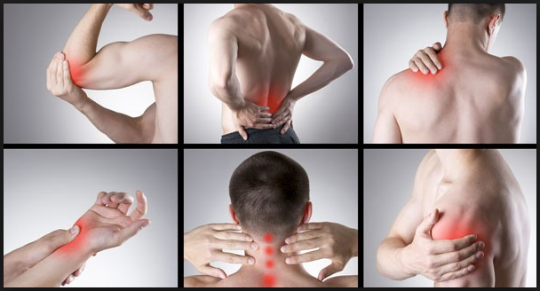

Enzyme Digestive - Accelerate Muscle Growth and Recovery - Bioptimizers Masszymes Review
Bioptimizers Masszymes is a nutritional supplement that uses enzymes to boost protein absorption within your body. Find out how this supplement works today in our review.

Already Decided?
That's great! Click the button on your right and take the action now.
What is Bioptimizers Masszymes?
You might be consuming 30 grams or 300 grams of protein every day – but unless you have the right enzymes in your digestive tract, your body can’t process this protein.
That’s where the Bioptimizers Masszymes supplement comes in.
Bioptimizers Masszymes is a nutritional supplement you take to support a protein-rich diet. It’s a supplement that many people didn’t realize they needed.
Why Take Bioptimizers Masszymes?
You’ve probably heard that a protein-rich diet can be hard on your body. It’s true: your body has to work hard to digest protein.
You need to use a lot of enzymes to digest protein. That’s where Bioptimizers Masszymes wants to help: it provides your body with the enzymes it needs to digest protein.
This has three main benefits:
Eating a protein-rich diet will be easier on your body
You’ll get more value from the protein you’re already eating
When you don’t have enzymes to digest protein, that protein just passes through your body. You don’t extract the maximum nutritional value from that protein.

As we mentioned at the top of our review, it doesn’t matter whether you’re eating 30 or 300 grams of protein: without the right enzymes, you’re not getting nutritional value.
The makers of Masszymes, Bioptimizers, claim that “you’re lucky if you’re absorbing 40% of the protein from your food.” Most of us simply don’t have enough enzymes to absorb protein from every gram we eat.
That’s a big problem for athletes, bodybuilders, and fitness enthusiasts. You may think you’re taking a scoop of protein powder containing 25g of pure protein.
But in reality, your body might only be absorbing 10g of that. That’s a problem if you’re trying to track your macronutrient intake
How Does Bioptimizers Masszymes Work? Watch Video
Masszymes is an enzyme formula that contains various protease strains. These protease strains work at different pH levels to ensure that the protein gets broken down in your digestive tract.
Down below, in the ingredients section, you’ll see each of these protease strains listed.
When proteins get broken down, they turn into amino acids. Amino acids can be used throughout your body for fuel and muscle growth.
The more cooked food you eat, the worse your protein absorption gets.
If you get most of your protein from fish, meat, and eggs, for example, then your body has to withdraw more enzymes from its “enzyme bank account” in order to properly digest the meal.
Eventually, your enzyme bank account is overdrawn, and your protein absorption plummets. Here’ show Bioptimizers describes the end result:
“The enzymes get drained faster and faster… leading to digestive nightmares. All this undigested protein leads to a disgusting caked up intestinal tract that blocks amino acid absorption.”
Bioptimizers actually posted a video on their website of their enzymes turning beef into a pile of amino acids.
They place a chunk of meat in a glass of water, then put meat in a glass of water mixed with Bioptimizers Masszymes. The meat gets broken down before your eyes (in a timelapse video).
By the end of the video, you can see that the ingredients in Masszymes have literally turned the chunk of meat into smaller and smaller chunks. You can see why this would make it easier for your body to digest.
Obviously, Masszymes isn’t the first digestive health supplement marketed towards bodybuilders.
There are other enzyme blends and digestive supplements available today. Let’s take a look at the ingredients list to find out what makes Bioptimizers Masszymes different.
Bioptimizers Masszymes Supplement:
Who is Masszymes for?
Wanna see the most from your training efforts? Fed up with downing protein shakes or binge eating on yet more chicken and steak? Well, thanks to Masszymes 2.0 you don’t have to any more. Because – and here it is in a nutshell – the industry’s been lying to you for years! You don’t need to simply eat more protein to gain muscle. What you actually need to do is ensure that your body’s absorbing it at the highest rate possible.
So if you want the fastest (legal!) way to turn up your training level, then this protein digesting enzyme formula is exactly what you need.
The Pros
Masszymes 2.0 is the industry’s strongest protein digesting enzyme formula available today. And the addition of AstraGin to the mix has made it 30-66% more effective at assisting the body to break down protein into those all essential amino acids.
Using the supplement could see your muscle growth literally explode, thanks to the powerful combinations effect on your digestion.
In addition to muscle growth, Masszymes aids muscle recovery too. This means the muscle fibers grow faster and bigger, plus AstraGin is proven to buffer the catabolic oxidative post-exercise attack on muscle cells to reduce inflammation as well.
The supplement improves and supports the whole digestive system thanks to eliminating the amount of undigested protein. This is why so many people out there suffer from ‘protein bloat’, because it’s toxic to the body. By ensuring that the protein you eat and drink is broken down, you really can do away with such unpleasant side effects.
The Cons
60-day-money-backWell, we’ve tried really hard to discover something to dislike about Masszymes. And we’ve failed… dismally! But we have to say that the thing we find the most disappointing is the fact that we’re all being fed a big bunch of lies about protein by the industry. Sure – we need it for muscle growth. But what we don’t need to do is simply take more and more on board – because actually, that ain’t gonna do jack for our training efforts. Instead we need to become much better informed about how our body takes the protein we feed it and uses it to build more muscle. And Masszymes is possibly the best means out there right now to do that.
What Are You Waiting For?
Your Purchase is Backed Up by 30 Days Money Back Guarantee. If You Don't Like The Product, Give It Back And You Will Be Refunded With No Questions Asked!
The Bottom Line
Well, we probably don’t need to tell that when it comes to Masszymes 2.0 – we’re sold! But here’s the crunch… You might think that all enzyme supplements are made equal – but nothing could be further from the truth. Most are stuffed with cheap imitations of the powerful combinations needed for maximum effect.
We particularly like the fact that Masszymes 2.0 has been created in conjunction with some of the top enzyme scientists in the world and specifically designed for weightlifters, bodybuilders, and athletes.
But don’t simply take our word for it. Give it a try! It’s at no risk, because it comes with a no quibble, 60 day, 100% money back guarantee if you’re not totally satisfied. If you want to see your training rock to the next level, then you need Masszymes in your life. In a nutshell – it’s awesome!
Recent Post
Mi40x Review - Xtreme Increases Lean Body Mass - Cell Expansion Protocol
 Exercise & Fitness/
Exercise & Fitness/
Joint Regen Review - The Most Complete Joint Formula Available
 Exercise & Fitness/Flat Belly Detox Review - Melt Stubborn Fat
 Dating Guides/
Dating Guides/
The Tao Of Badass - Seven Simple Scientific Tricks To Have Any Girl You Want
Dating Guides/How To Make Women Want You